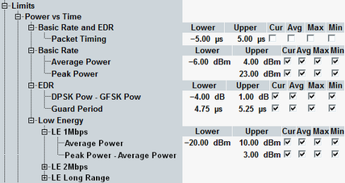

The power limits for BR, EDR and LE packets are defined in the following section.

The conformance requirements are described in "Transmit Power Requirements"; for a detailed description of the power results refer to "Statistical Power vs. Time Results (BR)", "Statistical Power vs. Time Results (EDR)" and "Statistical Power vs. Time Results (LE)" .
Option R&S CMW-KM611 is required for LE 1M PHY (uncoded). For LE 2M PHY and LE coded PHY, option R&S CMW-KM721 is also required.
- "Packet Timing": Lower and upper limits for the packet timing defined as the time between the expected and actual start of the first symbol of the Bluetooth burst. As the expected start is defined by the signaling trigger, this setting is relevant for combined signal path only (options R&S CMW-KS600/-KS610).
- "Average Power": Lower and upper limits for the average burst power during the carrier-on state
- "Peak Power": Upper limit for the peak power measured (no lower limit specified).
- "DPSK Pow – GFSK Pow": Lower and upper limit for the difference between the average power in the DPSK and in the GFSK-modulated portions of an EDR burst.
- "Guard Period": Lower and upper limit for the duration of the guard band between the packet header and the synchronization sequence in an EDR burst.
- "Peak Power – Average Power": Upper limit for the difference between peak and average power in LE bursts
Option R&S CMW-KM611 is required for LE 1M PHY (uncoded). For LE 2M PHY and LE coded PHY, option R&S CMW-KM721 is also required.